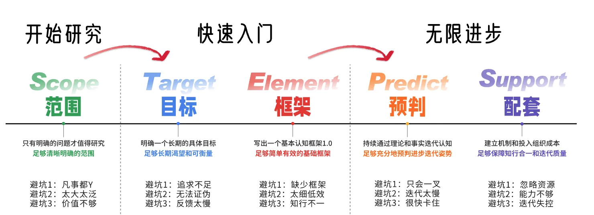
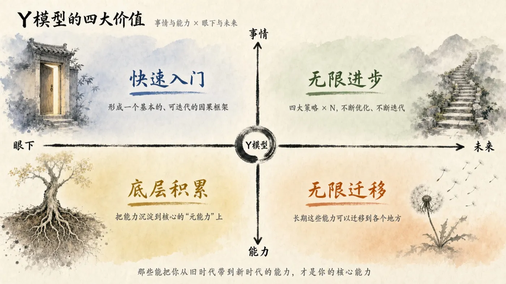
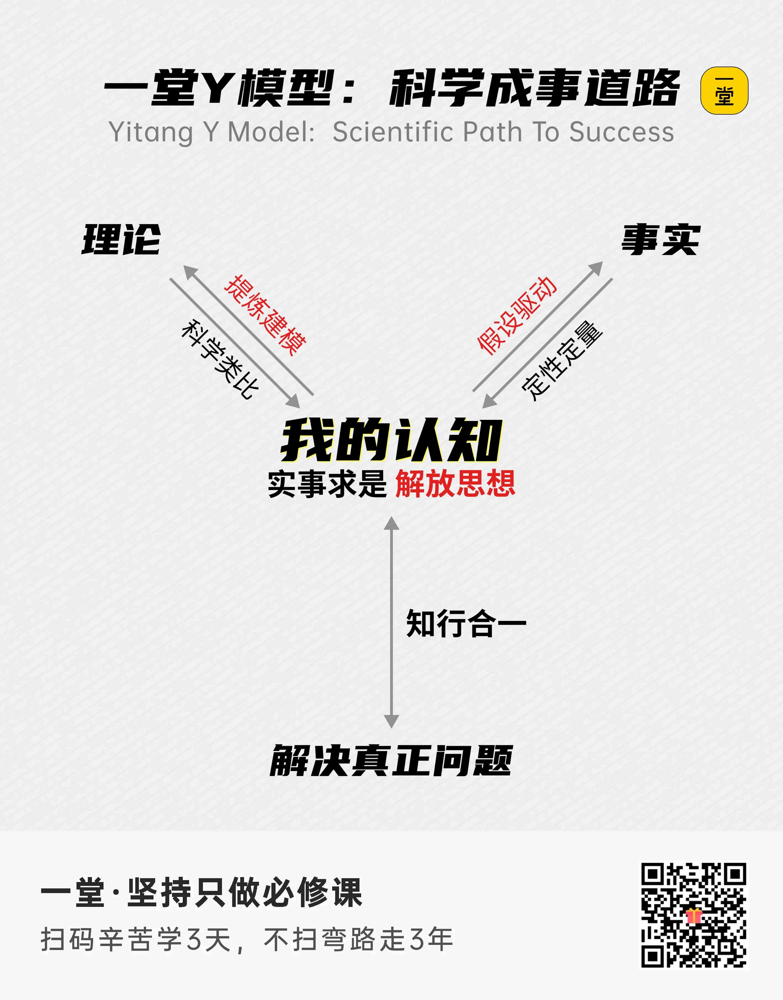

划定问题范围 → 明确目标 → 搭好框架 → 预判进步 → 组织配套
把"听声辨瓜"里的工程方法翻译成可复用学习系统：先定边界，再拆指标，再搭脚手架，再用四类信号交叉验证能力，最后用配套把进步从"靠意志力"变成"靠系统"。下面 5 个 STEP 独立成页，可按顺序读、也可按需回查。
从"听声辨瓜"翻译成可复用学习系统的 5 个动作
点任意节点可跳到对应 STEP 页。节点不是平行的——前后步有依赖关系，看箭头。
- STEP 01 问题范围 划边界 → 写一句话范围声明
- STEP 02 明确目标 "成为顶尖" → 4 个可验收数字
- STEP 03 基本框架 三列矩阵：特征 × 拍打 × 稳定
- STEP 04 预判进步 A / B / C / D 四类信号交叉
- STEP 05 组织配套 知识库 / 记录 / 复盘 / 访谈 / 资源
关键约束：每步的输出是下一步的输入—— 范围声明写不出来，后面 4 步全部空转；4 个量化指标没定，框架只是空架子。

5 个独立 STEP · 点开看完整内容
每页自成单元，可单独分享、打印、做 PPT。悬停 STEP 卡看上下游依赖。
问题范围 · 收窄到能赢的战场
听声辨瓜的前提是你得先知道自己在挑什么瓜。12 周全吃掉只会样样不深，先写范围声明。
明确目标 · 持续提升成功率
「成为顶尖」不是可验收的目标。拆成 1 个项目 / 70% 覆盖 / 8 项交付 / 30+ 投递——四个数都是可被第三方判定的。
基本框架 · 声音特征 × 拍打方式 × 稳定性
挑瓜的三个维度换成链上开发：判断依据、训练动作、重复频率。三列矩阵是脚手架，不是标准答案。
预判进步 · 四类交叉验证
判断进步不能靠感觉。A 定性定量 / B 科学类比 / C 假设驱动 / D 提炼建模——四类信号投票一致才上台阶。
组织配套 · 让进步可持续
方法论再精妙，没有配套就是空谈。五件套：知识库 / 记录设备 / 复盘会 / 专家访谈 / 论文资源。
周日复盘模板 · 把预判变成固定动作
把"预判进步"变成每周固定动作：四个必答问题 + 手感信号对比 + 下周只改一件事。
前 4 周打基础 / 中 4 周深耕 / 后 4 周收口
3 段节奏对应 5 步的不同侧重。前 4 周 STEP 01-03 各做一次，中 4 周 STEP 04 主导，后 4 周 STEP 05 主导。
| 阶段 | 重点 STEP | 本阶段动作 | 交付物 |
|---|---|---|---|
| 第 1-4 周 · 打基础 | STEP 01 → 02 → 03 | 写范围声明 / 拆 4 个量化指标 / 搭 3×3 矩阵 | 仓库 README + 1 个项目雏形 |
| 第 5-8 周 · 深耕 | STEP 04 主导 · 复盘每周循环 | 每周做 4 类信号投票 + 手感信号对比 + 跨周比较 | 8 周复盘日志 + 第 4 周月回顾结论 |
| 第 9-12 周 · 收口 | STEP 05 主导 · 第 8 周季复盘 | 补全 5 件套 + 第 8 周季复盘 + 第 12 周收尾 | 可投递化产物 + 30+ 投递记录 |
方法论 + 周复盘 = 12 周的飞轮
5 步不是直线，是螺旋。每月回滚一次 STEP 01-03，每周日做 STEP 04。
- 实线 = 一次性 5 步流程（前 4 周完成一次）
- 虚线 = 每周日循环（复盘 + 配资源调整）
- 第 8 周季复盘 → 第 9-12 周 STEP 05 主导
四大价值 · 12 周全程的隐性评分表
光有 5 步没有价值底座，方法论只是工具——配上四大价值才形成可被复用的"判官"。

范围声明（一句话贴仓库首页）
这是 STEP 1 产出的唯一硬交付物：
这句话同时包含做什么与不做什么，是 12 周内所有取舍的裁判——读不进这一句的人，方法论学了也白学。
